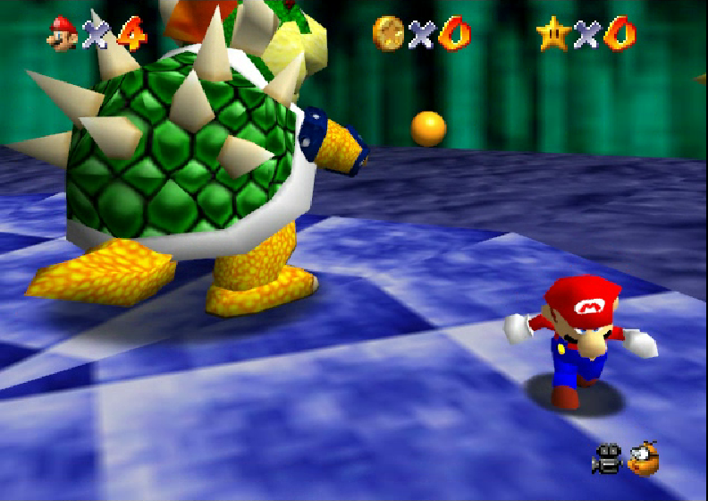

Trabalho final - Design de Software
Descrição
O trabalho final de Design de Software consiste em um desenvolvimento de um jogo por meio de programação em Python, usando a biblioteca Pygame.
Competências
- Capacidade lógica
- Programação em Python
- Trabalho em equipe
- Criatividade
- Capacidade de abstração
Passo a passo
- Mockup da ideia;
- Desenho das telas do jogo;
- Implementações em python;
- Criação de um menu;
- Uploadar no GitHub;
- Tornar o modelo demonstrável para a feira.